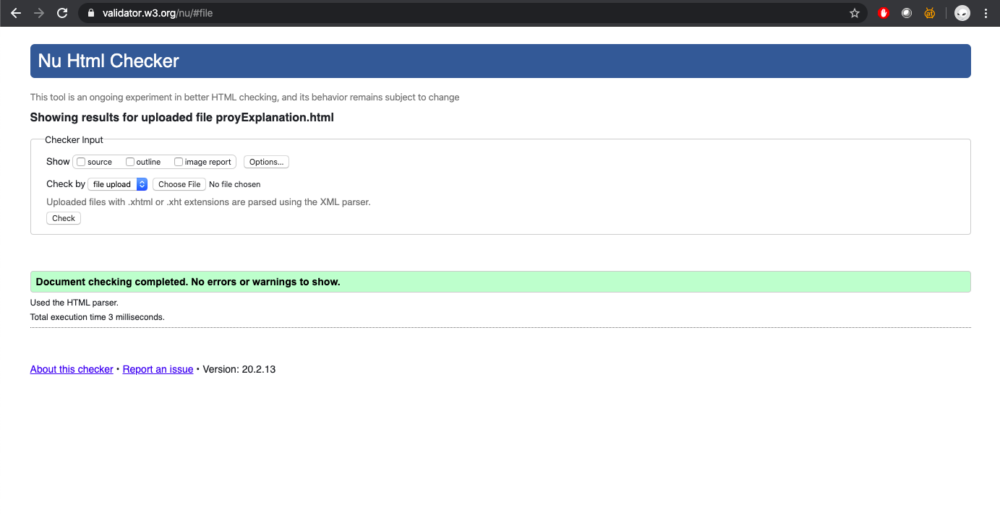

Problemática
Se planea resolver la problemática de movilidad y falta de
información en la Ciudad de México, específicamente cuando
se llevan a cabo manifestaciones. Aunado a esto, se pretende
promover la participación de los ciudadanos a las marchas que les
sean de interés, ya que normalmente existe inconformidad acerca de otras
problemáticas en la ciudad y como ciudadano se tiene el derecho de poder
expresar el desagrado que cause cualquiera de ellas.
Grito que no creo en nada y que todo es absurdo,
pero no puedo dudar de mi grito y necesito, al menos, creer en mi protesta.
Albert Camus
Casos de Usuario
-
Yo como consultante necesito obtener las fechas y ubicaciones de
huelgas/marchas en la ciudad de méxico para evitar y mejorar mi
movilidad por la ciudad esos días.
-
Yo como consultante necesito mantenerme informado sobre los movimientos
sociales que están afectando al país y los ciudadanos para involucrarme
y tener más participación ciudadana.
-
Yo como consultante necesito actualizar la situación de la marcha para
que los demás usuarios sepan cómo reaccionar o qué hacer.
-
Yo como consultante necesito ver las actualizaciones de la marcha de los
demás usuarios para interactuar y ver la evolución de la marcha
-
Yo como consultante necesito compartir la información que estoy obteniendo
del sitio a otros sitios para informar y lograr mayor alcance.
-
Yo como editor necesito estar pendiente de lo que se necesite publicar en
la plataforma para apoyar a los demás usuarios a mejorar su movilidad.
-
Yo como editor necesito informar correcta y verídicamente a los usuarios que
ingresen a la plataforma para evitar que la movilidad se vea aún más afectada.
-
Yo como editor necesito estar bien informado acerca de la problemática que se
intenta resolver con la manifestación para poder invitar a ciudadanos a participar
en ella si esa es su intención.
-
Yo como editor necesito saber si la marcha que se está realizando es sin fines anárquicos
para evitar que la seguridad de los usuarios se vea afectada.
-
Yo como editor necesito informar a los demás usuarios cuáles son las vías y zonas afectadas
por la manifestación para evitar crear más tráfico y liberar las vías de manera más eficiente.
Código a utilizar
El método get de la variable router funciona para crear las distintas rutas de la página.
let router = require('express').Router();
let pagesController = require('../controllers/PagesController');
router.get('/', pagesController.homepage);
router.get('/acerca', pagesController.about);
router.get('/nombre', pagesController.name);
router.get('/*', pagesController.anyPage);
module.exports = router;
Validator
